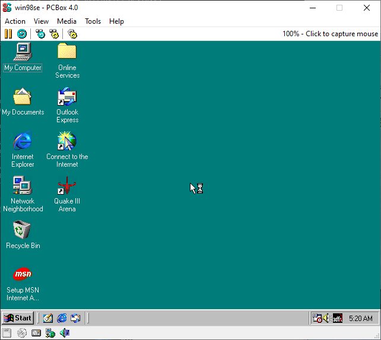

|

|
What can I do with PCBox?
- Learn how computers work at a low level by exploring the source code
- Run certain demos that don’t work on much else than real hardware (Like 8088MPH, for instance)
- Run old games or applications, on emulated hardware that they were designed for
- Intel Pentium 3 emulation
- Experimental SSE2 and SSE3 emulation
- Atari PC 4, VIA C3 and Intel i815 (From "feature/ich2" branch of 86Box) emulation
- Experimental coreboot support on some emulated boards
From "feature/mtrr" branch of 86Box
And more!
System requirements
Minimum
- CPU: Intel Core 2 Duo
- OS: Windows 7 or modern Linux
- RAM: 4 GB
|
Recommended
- CPU: AMD Ryzen 7 9800X3D or Intel Core i5 12600K
- OS: Windows 11 or modern Linux
- RAM: 16 GB
|
|